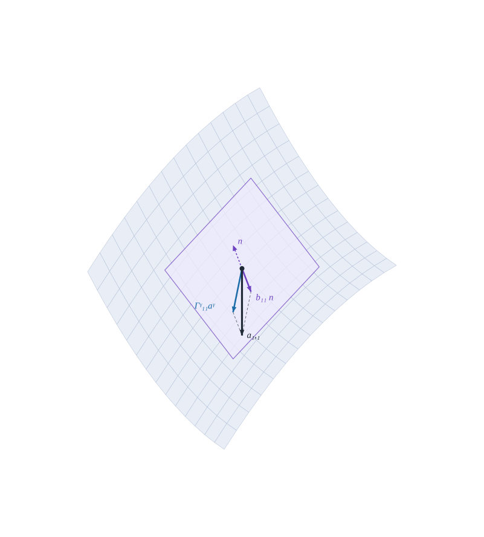

9Formas fundamentales y fórmulas de Gauss–Weingarten
Cómo se curva una superficie y cómo cambian sus vectores básicos

Figura 9.1: Fórmula de Gauss para \(\mathbf{a}_{1,1}\) (negro) en el paraboloide hiperbólico: la parte tangente \(\bar\Gamma^\gamma_{11}\mathbf{a}_\gamma\) (azul) y la parte normal \(b_{11}\hat{\mathbf{a}}_3\) (violeta) suman \(\mathbf{a}_{1,1}\). Los vectores están ampliados \(\times3\) y el plano violeta es el tangente. Con la normal hacia arriba, \(b_{11}<0\) porque la superficie se curva hacia abajo en la dirección \(\theta^1\).
Qué distingue un plano de un cilindro si ambos se miden igual desde dentro, y cómo cambian los vectores básicos al movernos por la superficie
Objetivos y prerrequisitos
Objetivos. Al terminar el tema sabrás:
definir las formas fundamentales primera, segunda y tercera de una superficie;
calcular el tensor de curvatura \(b_{\alpha\beta}\) y sus componentes mixtas \(b^\alpha_\beta\), con el convenio de signo del libro;
deducir las fórmulas de Gauss (derivadas de \(\mathbf{a}_\alpha\)) y de Weingarten (derivada de \(\hat{\mathbf{a}}_3\));
derivar un vector sobre la superficie y distinguir la derivada covariante en la superficie de la derivada en el espacio;
verificar numéricamente Gauss y Weingarten en un paraboloide hiperbólico.
La primera forma (la métrica) mide longitudes y ángulos dentro de la superficie, pero no distingue un plano de un cilindro: ambos tienen la métrica euclídea con coordenadas adecuadas. Lo que los diferencia es cómo se curva en el espacio, y eso se detecta con el cambio de la normal \(\hat{\mathbf{a}}_3\) al movernos sobre la superficie.
ImportanteIdea clave
Primera forma fundamental: geometría intrínseca (medidas dentro de la superficie). Segunda forma: cómo está inmersa en el espacio (cuánto se separa de su plano tangente).
9.2 Las tres formas fundamentales
Un desplazamiento infinitesimal sobre la superficie cambia la posición y la normal: \[
d\,{}_0\mathbf{r}=\mathbf{a}_\alpha\,d\theta^\alpha,\qquad d\hat{\mathbf{a}}_3=\hat{\mathbf{a}}_{3,\alpha}\,d\theta^\alpha .
\]
Definición 9.1 (Formas fundamentales)\[
\begin{aligned}
\mathrm{I}&=d\,{}_0\mathbf{r}\cdot d\,{}_0\mathbf{r}=a_{\alpha\beta}\,d\theta^\alpha d\theta^\beta,\\
\mathrm{II}&=-\,d\,{}_0\mathbf{r}\cdot d\hat{\mathbf{a}}_3=b_{\alpha\beta}\,d\theta^\alpha d\theta^\beta,\\
\mathrm{III}&=d\hat{\mathbf{a}}_3\cdot d\hat{\mathbf{a}}_3=a_{\gamma\eta}\,b^\eta_\alpha b^\gamma_\beta\,d\theta^\alpha d\theta^\beta .
\end{aligned}
\tag{9.1}\] Aquí \(b_{\alpha\beta}\) es el tensor de curvatura de la superficie y \(b^\alpha_\beta=a^{\alpha\gamma}b_{\gamma\beta}\) sus componentes mixtas.
Proposición 9.1 (Definición equivalente y simetría de \(b_{\alpha\beta}\))\[
b_{\alpha\beta}=\hat{\mathbf{a}}_3\cdot\mathbf{a}_{\alpha,\beta}=-\,\mathbf{a}_\alpha\cdot\hat{\mathbf{a}}_{3,\beta}=b_{\beta\alpha} .
\tag{9.2}\]
Derivando \(\hat{\mathbf{a}}_3\cdot\mathbf{a}_\alpha=0\) respecto de \(\theta^\beta\): \(\hat{\mathbf{a}}_{3,\beta}\cdot\mathbf{a}_\alpha+\hat{\mathbf{a}}_3\cdot\mathbf{a}_{\alpha,\beta}=0\), que da la igualdad de las dos expresiones. La simetría es consecuencia de \(\mathbf{a}_{\alpha,\beta}={}_0\mathbf{r}_{,\alpha\beta}=\mathbf{a}_{\beta,\alpha}\) (la superficie es \(C^2\)). \(\blacksquare\)
9.2.1 Convenio de signo
AdvertenciaSigno de \(b_{\alpha\beta}\)
Este libro adopta \(b_{\alpha\beta}=\hat{\mathbf{a}}_3\cdot\mathbf{a}_{\alpha,\beta}\) con \(\hat{\mathbf{a}}_3=\mathbf{a}_1\times\mathbf{a}_2/\|\cdot\|\). Consecuencias:
\(b_{\alpha\beta}>0\) si la superficie se curva hacia\(\hat{\mathbf{a}}_3\) (concavidad del lado de la normal);
en una esfera con normal saliente, \(b_{\alpha\beta}<0\) (y la curvatura media es negativa);
al invertir la normal \(\hat{\mathbf{a}}_3\to-\hat{\mathbf{a}}_3\), \(b_{\alpha\beta}\) cambia de signo. La curvatura de Gauss \(K\)no cambia (Sección 10.3).
Otros textos usan \(b_{\alpha\beta}=-\mathbf{a}_\alpha\cdot\hat{\mathbf{a}}_{3,\beta}\) con la normal opuesta o definen la segunda forma con el signo contrario; al comparar fórmulas hay que comprobar el convenio.
9.3 Fórmulas de Gauss y Weingarten
Las derivadas \(\mathbf{a}_{\alpha,\beta}\) y \(\hat{\mathbf{a}}_{3,\beta}\) son vectores de \(\mathbb{R}^3\); se descomponen en la terna.
Proposición 9.2 (Fórmulas de Gauss)\[
\mathbf{a}_{\alpha,\beta}=\bar\Gamma^{\gamma}_{\alpha\beta}\,\mathbf{a}_\gamma+b_{\alpha\beta}\,\hat{\mathbf{a}}_3,
\qquad
\bar\Gamma^{\gamma}_{\alpha\beta}=\mathbf{a}^\gamma\cdot\mathbf{a}_{\alpha,\beta}=\tfrac12\,a^{\gamma\mu}\bigl(a_{\mu\alpha,\beta}+a_{\mu\beta,\alpha}-a_{\alpha\beta,\mu}\bigr).
\tag{9.3}\]
Proposición 9.3 (Fórmulas de Weingarten)\[
\hat{\mathbf{a}}_{3,\beta}=-\,b_{\alpha\beta}\,\mathbf{a}^\alpha=-\,b^\alpha_\beta\,\mathbf{a}_\alpha .
\tag{9.4}\] También: \(\mathbf{a}^\alpha_{,\beta}=-\bar\Gamma^\alpha_{\beta\gamma}\,\mathbf{a}^\gamma+b^\alpha_\beta\,\hat{\mathbf{a}}_3\).
Gauss. Al descomponer \(\mathbf{a}_{\alpha,\beta}\) en la terna \(\{\mathbf{a}_\gamma,\hat{\mathbf{a}}_3\}\), las componentes son los productos escalares con la terna recíproca: \(\mathbf{a}^\gamma\cdot\mathbf{a}_{\alpha,\beta}\) (tangente) y \(\hat{\mathbf{a}}_3\cdot\mathbf{a}_{\alpha,\beta}=b_{\alpha\beta}\) (normal). La expresión con la métrica es la del ecuación 6.2, porque los productos \(\mathbf{a}_\gamma\cdot\mathbf{a}_{\alpha,\beta}\) solo involucran \(a_{\alpha\beta}\) y sus derivadas.
Weingarten. Como \(\hat{\mathbf{a}}_3\cdot\hat{\mathbf{a}}_3=1\), derivando, \(\hat{\mathbf{a}}_3\cdot\hat{\mathbf{a}}_{3,\beta}=0\): \(\hat{\mathbf{a}}_{3,\beta}\) es tangente. Su componente sobre \(\mathbf{a}_\alpha\) se obtiene con \(\mathbf{a}^\alpha\) y ecuación 9.2: \(\hat{\mathbf{a}}_{3,\beta}=(\hat{\mathbf{a}}_{3,\beta}\cdot\mathbf{a}_\alpha)\,\mathbf{a}^\alpha=-b_{\alpha\beta}\mathbf{a}^\alpha\). Subiendo el índice, \(-b^\alpha_\beta\mathbf{a}_\alpha\). La fórmula de \(\mathbf{a}^\alpha_{,\beta}\) sale de derivar \(\mathbf{a}^\alpha\cdot\mathbf{a}_\gamma=\delta^\alpha_\gamma\). \(\blacksquare\)
Los símbolos de Christoffel de la superficie \(\bar\Gamma^\gamma_{\alpha\beta}\) (con barra: evaluados en \(\theta^3=0\)) son los del tema de Christoffel (Sección 6.2), con índices griegos \(1,2\) y la métrica \(a_{\alpha\beta}\). Las fórmulas de Gauss dicen que \(\mathbf{a}_{\alpha,\beta}\) tiene una parte tangente (recogida por \(\bar\Gamma\)) y una parte normal (recogida por \(b_{\alpha\beta}\)), como muestra la Figura 9.1.
9.4 Derivadas de un vector
Un vector \(\mathbf{V}=V^\alpha\mathbf{a}_\alpha+V^3\hat{\mathbf{a}}_3\) definido sobre la superficie se deriva con la regla del producto y las fórmulas de Gauss y Weingarten.
Proposición 9.4 (Derivada de un campo vectorial)\[
\mathbf{V}_{,\alpha}=\bigl(V^\mu{}_{\|\alpha}-V^3\,b^\mu_\alpha\bigr)\,\mathbf{a}_\mu+\bigl(V^3_{,\alpha}+V^\beta\,b_{\alpha\beta}\bigr)\,\hat{\mathbf{a}}_3,
\tag{9.5}\] con la derivada covariante en la superficie\[
V^\mu{}_{\|\alpha}=V^\mu_{,\alpha}+\bar\Gamma^\mu_{\beta\alpha}\,V^\beta,\qquad
V_{\mu\|\alpha}=V_{\mu,\alpha}-\bar\Gamma^\beta_{\mu\alpha}\,V_\beta .
\tag{9.6}\]
\(\mathbf{V}_{,\alpha}=V^\beta_{,\alpha}\mathbf{a}_\beta+V^\beta\mathbf{a}_{\beta,\alpha}+V^3_{,\alpha}\hat{\mathbf{a}}_3+V^3\hat{\mathbf{a}}_{3,\alpha}\). Sustituyendo ecuación 9.3 y ecuación 9.4: \(V^\beta\mathbf{a}_{\beta,\alpha}=V^\beta\bar\Gamma^\mu_{\beta\alpha}\mathbf{a}_\mu+V^\beta b_{\beta\alpha}\hat{\mathbf{a}}_3\) y \(V^3\hat{\mathbf{a}}_{3,\alpha}=-V^3b^\mu_\alpha\mathbf{a}_\mu\). Agrupando por \(\mathbf{a}_\mu\) y \(\hat{\mathbf{a}}_3\) se obtiene ecuación 9.5. \(\blacksquare\)
AdvertenciaNotación de la doble barra
En este libro, \(\|\) denota la derivada covariante respecto de la superficie (índices griegos, símbolos \(\bar\Gamma\) y métrica \(a_{\alpha\beta}\)), como en ecuación 9.6. Para la derivada covariante respecto del espacio tridimensional se usa la barra simple, \(V^\alpha|_\beta=V^\alpha_{,\beta}+V^i\,\Gamma^\alpha_{i\beta}\). En el tema de Christoffel, donde no había superficie, \(\|\) se usó para la derivada covariante genérica de \(n\) coordenadas; a partir de aquí tiene el sentido de superficie.
El término \(-V^3b^\mu_\alpha\) muestra que la curvatura mezcla las componentes tangentes y normales: un vector normal a la superficie, al desplazarse, produce una variación tangente. En el siguiente capítulo esto explica por qué una lámina curva acopla membrana y flexión.
9.5 Ejemplo resuelto: el cilindro
Ejemplo 9.1 (Ejemplo resuelto: \(b_{\alpha\beta}\), Gauss y Weingarten en el cilindro) Con \(\mathbf{r}=(R\cos\theta^1,R\sin\theta^1,\theta^2)\) (\(\theta^1\) ángulo, \(\theta^2\) altura): \(\mathbf{a}_1=R(-\sin\theta^1,\cos\theta^1,0)\), \(\mathbf{a}_2=(0,0,1)\), \(a_{\alpha\beta}=\operatorname{diag}(R^2,1)\) y \(\hat{\mathbf{a}}_3=\mathbf{a}_1\times\mathbf{a}_2/\|\cdot\|=(\cos\theta^1,\sin\theta^1,0)\) (saliente). Como la métrica es constante, todos los \(\bar\Gamma\) son nulos: desde dentro, el cilindro es un plano.
El plano y el cilindro tienen la misma primera forma (con coordenadas adecuadas) pero distinta segunda forma: \(b_{11}=-R\neq0\).
Pon a prueba lo anterior. Los ejercicios se corrigen en tu navegador y no envían nada a ningún sitio.
Para un cilindro de radio \(R=2\) con normal saliente, ¿cuánto vale \(b_{11}\)?
\(b_{11}=-R=-2\).
En el mismo cilindro, ¿cuánto vale \(b^1_1=a^{11}b_{11}\)?
\(a^{11}=1/R^2=0{,}25\), luego \(b^1_1=0{,}25\cdot(-2)=-0{,}5=-1/R\).
La segunda forma fundamental se puede calcular conociendo solo las longitudes medidas sobre la superficie (la primera forma).
Falso. El cilindro y el plano tienen la misma primera forma y distinta segunda. \(b_{\alpha\beta}\) depende de cómo está inmersa la superficie en el espacio.
NotaUn poco de historia: las fórmulas de Weingarten
Las fórmulas que dan la derivada de la normal en función de los vectores tangentes y de las dos formas fundamentales las estableció en 1861 el matemático alemán Julius Weingarten (1836–1910), en un trabajo sobre superficies que se pueden «desarrollar» unas sobre otras (Ueber eine Klasse auf einander abwickelbarer Flächen, Crelle, vol. 59). Weingarten buscaba superficies isométricas a una de revolución dada; hoy las superficies de Weingarten son aquellas cuyas curvaturas principales están ligadas por una relación funcional. Las fuentes consultadas no precisan cómo se asoció el nombre de Gauss a las fórmulas que dan las derivadas de \(\mathbf{a}_\alpha\).
calculado Se verifican ecuación 9.3 y ecuación 9.4 en un punto del paraboloide hiperbólico del tema de superficies parametrizadas, y que el vector constante \(\mathbf{C}=(0{,}3,-0{,}2,0{,}9)\) tiene derivada nula según ecuación 9.5.
usingGeometria, LinearAlgebraRx, Ry =3.0, -2.0θ = [0.7, -0.4]r =paraboloide_curvo(Rx, Ry)A =base_superficie(r, θ); a =metrica(A); n =normal_unitaria(A)D =derivadas_segundas(r, θ) # D[:, α, β] = aα,βΓ =cristoffel_superficie(r, θ) # Γ[γ, α, β]b =segunda_forma(r, θ) # bαβ = n̂·aα,βbm =tensor_curvatura_mixto(a, b) # b^α_βgauss =all(D[:, α, β] ≈ A * Γ[:, α, β] + b[α, β] * n for α in1:2, β in1:2)h =1e-6weingarten =all(1:2) do βe= β ==1 ? [h, 0] : [0, h] dn = (normal_unitaria(base_superficie(r, θ .+e)) -normal_unitaria(base_superficie(r, θ .-e))) /2hisapprox(dn, -A * bm[:, β]; atol =1e-5)end(gauss = gauss, weingarten = weingarten, b =round.(b; digits =5), b_mixto =round.(bm; digits =5))
Esfera. Calcula \(b_{\alpha\beta}\) para la esfera de radio \(\rho\) con normal saliente y comprueba que \(b_{\alpha\beta}=-\tfrac1\rho\,a_{\alpha\beta}\).
NotaSolución
Con \(\hat{\mathbf{a}}_3=\mathbf{r}/\rho\) y \(\mathbf{a}_{\alpha,\beta}\cdot\hat{\mathbf{a}}_3=-\mathbf{a}_\alpha\cdot\hat{\mathbf{a}}_{3,\beta}=-\mathbf{a}_\alpha\cdot\mathbf{a}_\beta/\rho\) (pues \(\hat{\mathbf{a}}_{3,\beta}=\mathbf{a}_\beta/\rho\)) se obtiene \(b_{\alpha\beta}=-a_{\alpha\beta}/\rho\).
Cilindro. Comprueba que \(\mathrm{III}=\frac1{R^2}\,a_{11}(d\theta^1)^2\) para el cilindro y que \(\mathrm{III}-2H\,\mathrm{II}+K\,\mathrm{I}=0\) con \(H=-\tfrac1{2R}\) y \(K=0\).
NotaSolución
\(\mathrm{I}=R^2(d\theta^1)^2+(d\theta^2)^2\), \(\mathrm{II}=-R(d\theta^1)^2\), \(\mathrm{III}=(d\theta^1)^2\). Entonces \(\mathrm{III}-2H\mathrm{II}=(d\theta^1)^2+\tfrac1R(-R)(d\theta^1)^2=0\) ✓.
Weingarten. Comprueba ecuación 9.5 para el campo \(\mathbf{V}=\hat{\mathbf{a}}_3\) y recupera ecuación 9.4.
NotaSolución
Con \(V^\alpha=0\) y \(V^3=1\): \(\hat{\mathbf{a}}_{3,\alpha}=-b^\mu_\alpha\mathbf{a}_\mu+0\cdot\hat{\mathbf{a}}_3\).
\(\mathbf{a}^\alpha_{,\beta}\). Escribe \(\mathbf{a}^\alpha_{,\beta}\) en términos de \(\bar\Gamma\) y \(b^\alpha_\beta\) y verifícalo con Geometria.
NotaSolución
\(\mathbf{a}^\alpha_{,\beta}=-\bar\Gamma^\alpha_{\beta\gamma}\mathbf{a}^\gamma+b^\alpha_\beta\hat{\mathbf{a}}_3\); se comprueba derivando numéricamente base_superficie(r, θ) * inv(metrica(...)).
La doy por superada si…
Escribo las tres formas fundamentales y sé qué mide cada una.
Calculo \(b_{\alpha\beta}\) y \(b^\alpha_\beta\) con el convenio \(b_{\alpha\beta}=\hat{\mathbf{a}}_3\cdot\mathbf{a}_{\alpha,\beta}\) y sé cómo cambia al invertir la normal.
Enuncio Gauss y Weingarten y sé qué parte de \(\mathbf{a}_{\alpha,\beta}\) es tangente y cuál normal.
Distingo la derivada covariante en la superficie (\(\|\)) de la derivada en el espacio (\(|\)).
Sé por qué el plano y el cilindro tienen la misma primera forma y distinta segunda.
NotaFuentes, correcciones y qué queda pendiente
Fuentes. Texto autónomo, resultados estándar (Carmo 1994; Struik 1955; Weatherburn 1927; Novozhilov 1959; Lipschultz 1969). Gauss, Weingarten y la derivada de un vector sobre la superficie se verifican con Geometria (conjuntos «Superficies…» y «Derivada de un vector sobre la superficie»).
Convenio.\(b_{\alpha\beta}=\hat{\mathbf{a}}_3\cdot\mathbf{a}_{\alpha,\beta}\) con \(\hat{\mathbf{a}}_3=\mathbf{a}_1\times\mathbf{a}_2/\|\cdot\|\) (fijado por el autor).
Qué queda pendiente. Figuras con revisión visual pendiente; nota histórica basada en fuentes secundarias; referencias no leídas línea a línea.
Lipschultz, M. 1969. Differential Geometry. Schaum’s Outlines.
Novozhilov, V. V. 1959. The Theory of Thin Shells. P. Noordhoff ltd.
Weatherburn, C. E. 1927. Differential Geometry. Cambridge Press.
Struik, D. J. 1955. Geometría Diferencial Clásica. Aguilar.
Carmo, M. do. 1994. Geometría diferencial de curvas y superficies. Alianza Universidad.
Referencias
Son las mismas que aparecen en el margen, junto al texto.
Carmo, M. do. 1994. Geometría diferencial de curvas y superficies. Alianza Universidad.
Lipschultz, M. 1969. Differential Geometry. Schaum’s Outlines.
Novozhilov, V. V. 1959. The Theory of Thin Shells. P. Noordhoff ltd.
Struik, D. J. 1955. Geometría Diferencial Clásica. Aguilar.
Weatherburn, C. E. 1927. Differential Geometry. Cambridge Press.